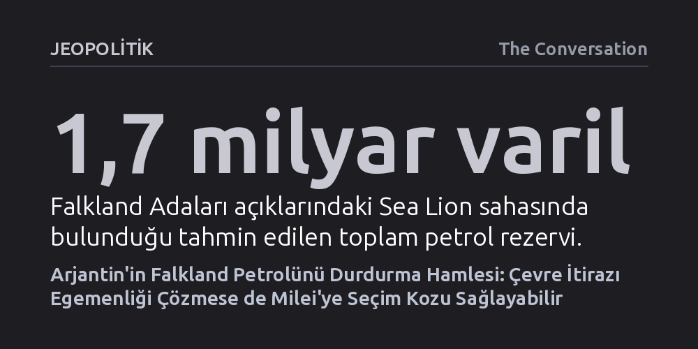

JEOPOLITIK · The Conversation · 2026-10-22
Arjantin, Falkland açıklarındaki Sea Lion petrol projesini uluslararası deniz mahkemesi üzerinden durdurmaya çalışsa da egemenlik iddialarını hukuken kabul ettirmesi zor görünüyor. Buna karşın çevre hukuku üzerinden elde edilecek kısmi bir kazanım, zor durumdaki Devlet Başkanı Milei’ye seçim öncesi kritik bir siyasi koz sağlayabilir.
Uluslararası deniz hukukunun, çözümsüz egemenlik ihtilaflarında bile çevre riski argümanları üzerinden siyasi ve diplomatik bir baskı aracına nasıl dönüştürülebileceğini gösteriyor.

Arjantin ile Birleşik Krallık arasındaki yaklaşık iki asırlık Falkland (Malvinas) gerilimi, adalara yakın sularda başlatılması planlanan devasa bir petrol projesiyle yeniden alevlendi. Buenos Aires yönetimi, 13 Ekim'de Hamburg merkezli Uluslararası Deniz Hukuku Mahkemesi'ne (ITLOS) başvurarak Sea Lion adlı petrol sahasındaki tüm faaliyetlerin acilen durdurulmasını talep etti. İngiliz ve İsrailli şirketlerin ortaklığında yürütülen ve Falkland yerel yönetimince lisanslanan bu sahada yaklaşık 1,7 milyar varil petrol bulunduğu, bunun en az 500 milyon varilinin doğrudan çıkarılabilir olduğu öngörülüyor.
Arjantin, Birleşik Krallık'ın kendi rızası hilafına ve Arjantin'in deniz tabanı üzerindeki egemen haklarını çiğneyerek sondaj izni verdiğini ileri sürüyor. 28 Eylül'de Londra'ya karşı tahkim sürecini başlatan ve projeyi durdurması için 14 günlük süre tanıyan Arjantin, bu sürenin dolmasıyla birlikte mahkemeden telafisi imkansız zararları engellemek amacıyla acil "geçici tedbir" istedi. İngiltere Dışişleri Bakanı Ed Miliband ise Arjantin'in iddialarını reddederek mahkemenin bu uyuşmazlıkta herhangi bir yargı yetkisinin bulunmadığını ve Londra'nın bu yetkisizliği kararlılıkla savunacağını vurguladı.
Hamburg'daki mahkeme, Birleşmiş Milletler Deniz Hukuku Sözleşmesi'ni temel alarak deniz uyuşmazlıklarını çözüme bağlar; fakat sözleşmenin kara egemenliğini belirleme yetkisi yoktur. Uluslararası deniz hukukunun en temel kaidesi gereği, denizdeki tüm haklar kıyı egemenliğinden türer. Dolayısıyla Falkland Adaları'na fiilen kim hükmediyorsa, adaların etrafındaki kıta sahanlığına ve doğal kaynaklara da onun sahip olduğu varsayılır. Bu kural, denizdeki petrol ihtilafını kaçınılmaz olarak iki yüz yıllık toprak aidiyeti tartışmasına geri bağlamaktadır.
Arjantin hükümeti, tahkim sonuçlanana kadar 2027 başında üretime geçmesi beklenen Sea Lion projesinin durdurulmaması halinde sahada geri döndürülemez bir "oldubitti" yaratılacağını öne sürüyor. Buenos Aires bu talebini, 2015 yılında Gana ile Fildişi Sahili arasındaki sınır davasında mahkemenin yeni sondajları yasaklayan kararına dayandırıyor. Ancak o davada her iki ülkenin de tartışmasız kıyı egemenliği vardı ve tek anlaşmazlık deniz sınırının koordinatlarıydı. Arjantin ise resmiyette egemenlik kararı istemediğini söylese de talebini kıta sahanlığı üzerindeki egemen haklarına dayandırdığı için, mahkemenin adaların kime ait olduğuna girmeden Arjantin'in talebini makul ve temelli bulması hukuken oldukça güçtür.
Arjantin'in önündeki bu hukuki tıkanıklığı aşmak için masaya sürdüğü en yaratıcı koz, Ukrayna ile Rusya arasındaki Kerç Boğazı davasında ortaya çıkan Kırım emsalidir. Tahkim mahkemesi, Kırım'ın kime ait olduğunu tayin etmeksizin, Rusya'nın inşa ettiği köprü ve boru hatlarında yeterli çevresel etki değerlendirmesi yapmadığını ve deniz çevresini korumada işbirliğine gitmediğini tespit etmiştir. Mahkemeye göre çevre etki değerlendirmesi gibi yükümlülükler bir devletin doğrudan "yargı yetkisi veya kontrolü" altındaki her faaliyet için geçerlidir; dolayısıyla fiili kontrolün varlığı, egemenlik kararına gerek kalmadan hukuki ihlali saptamaya yetmektedir.
Bu mantık Falkland sahasına uyarlandığında Arjantin'e kısmi bir hareket alanı açıyor. Adaları uluslararası alanda fiilen temsil eden Birleşik Krallık, sözleşme gereği kontrolü altındaki faaliyetlerin komşu ülkelere çevre kirliliği zararı vermemesini sağlamakla yükümlüdür. Sea Lion sahasının önceki işletmecisi tarafından hazırlanan acil durum planında, olası bir kuyu patlaması halinde petrolün 30 gün içinde Arjantin karasularına ulaşma ihtimali yüzde 30 olarak hesaplanmıştır. Mahkeme egemenlik düğümüne hiç dokunmadan, Londra'nın bu çevresel riskleri usulünce değerlendirip Buenos Aires ile şeffaf şekilde paylaşıp paylaşmadığını denetleyebilir.
Ne var ki Kırım kararında mahkemenin sadece hukukun ihlal edildiğini belirten "tespit edici telafi" ile yetinip Rusya'ya herhangi bir tazminat ya da inşaatı durdurma emri vermediği unutulmamalıdır. Benzer şekilde, Falkland davasında da çevre temelli bir kazanım projenin ilerlemesini fiziken durdurmaya yetmeyebilir; ancak İngiltere'yi Arjantin ile bilgi paylaşmaya ve ortak çevre güvenliği masasına oturmaya mecbur bırakabilir.
Hukuki sürecin arka planındaki asıl itici güç Arjantin'in iç siyasetinde aranmalıdır. Ülkedeki derin ekonomik bunalım ve reform sancıları nedeniyle kamuoyu desteği eriyen Devlet Başkanı Javier Milei, önümüzdeki yıl yapılacak seçimler öncesinde zorlu bir sınavla karşı karşıyadır. Falkland (Malvinas) meselesi ise Arjantin toplumunda siyasi kamplaşmaları aşan, her kesimin en hassas olduğu ulusal bir davadır. Uluslararası bir mahkemeden Birleşik Krallık aleyhine çıkacak sembolik bir çevre tedbiri kararı dahi Milei için kamuoyuna sunulacak güçlü bir diplomatik zafere dönüşebilir.
Daha geniş perspektiften bakıldığında, çevre riskleri üzerinden kurulacak zorunlu bir temas, iki ülkeyi uzun bir aradan sonra yeniden aynı diplomatik masada buluşturabilir. Geçmişte Avustralya ile Doğu Timor'un Timor Denizi'ndeki petrol ve gaz gelirlerini adil paylaşım esasına göre bölüşmesi gibi başarılı uzlaşma örnekleri bulunmaktadır. Falkland açıklarındaki olası riskleri birlikte yönetme zorunluluğu, gelecekte kaynakların barışçıl ve adil biçimde paylaşılmasına kapı aralayacak ilk yapıcı adım olabilir.